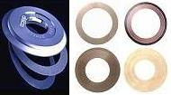

Die Preparation
Die preparation
is the process by which the wafer is singulated into individual dice in
preparation for assembly. Die preparation consists of two
major steps, namely, wafer mounting and wafer saw.
Wafer mounting
is the process of providing support to the wafer to facilitate the
processing of the wafer from Wafer Saw through Die Attach. During wafer
mounting, the wafer
and a wafer frame
are simultaneously attached on a wafer or
dicing tape. The wafer frame may be made of
plastic or metal, but it should be resistant to warping, bending,
corrosion, and heat. The dicing tape (also referred to as a wafer
film) is just a PVC sheet with
synthetic adhesive
on one side to hold both the wafer frame and the wafer. Typically
measuring 3 mils thick, it should be flexible yet tough and strong, and
with low impurity levels as well.
Using a
special wafer mounting machine,
wafer mounting
consists of the following steps: 1) frame loading; 2) wafer
loading; 3) application of tape to the wafer and wafer frame; 4) cutting
of the excess tape; and 5) unloading of the mounted wafer.
During wafer mounting, the following
concerns must be prevented: wafer cracking or breakage, bubble
trapping on the adhesive side of the tape, scratches on the active side
of the wafer, and non-uniform tape tension which can result in tape
wrinkles.
Wafer saw
follows wafer mounting and is the step that actually cuts the wafer into
individual dice for assembly in IC packages. The
wafer saw process
consists of the following steps: 1) the frame-mounted wafer is
automatically aligned into position for cutting; 2) the wafer is then
cut thru its thickness according to the programmed die dimensions using
a resin-bonded diamond wheel (see Fig. 3) rotating at a very high rpm; and 3) the
wafer goes through a cleaning process using high pressure DI water
sprayed on the rotating workpiece and then dried by air-blowing.
|
 |
|
Fig. 3.
Photos of Wafer Saw Blades
|
Kerf width is defined as the average width of the cutline plus the error
attributed to microchipping. The singulated dice may be left attached to
the wafer tape for pick-and-place during
die attach or may be individually kept in
waffle packs for future assembly.
Important
parameters for consideration
during wafer saw include the following:
cut mode (direction and
manner of cutting),
feed speed
(speed at which the wafer is being
introduced to the blade),
spindle rev (speed of revolution of the
cutting wheel), blade height, and cutting water flow. Important
parameters for the washing step include the following: wash time, wash
rpm, DI water pressure, dry time, dry rpm, temperature and air flow rate.
Front-End Assembly
Links:
Wafer Backgrind;
Die Preparation;
Die Attach;
Wirebonding;
Die Overcoat
Back-End Assembly
Links:
Molding;
Sealing;
Marking;
DTFS;
Leadfinish
See Also:
Die Preparation Failure Mechanisms;
IC
Manufacturing; Assembly Equipment
HOME
Copyright
©
2001-2006
www.EESemi.com.
All Rights Reserved.